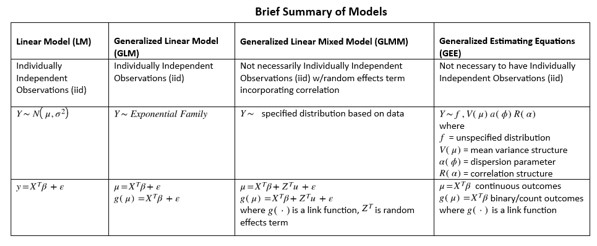
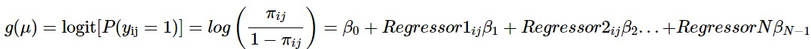
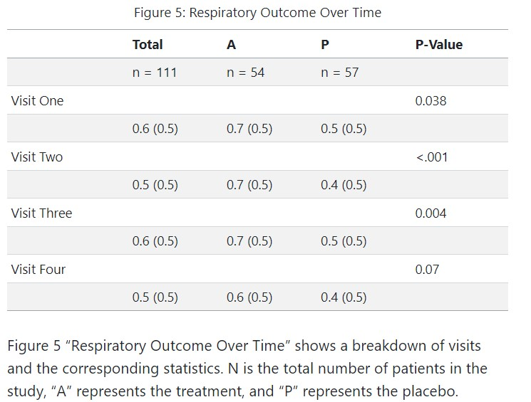

Call:
geeglm(formula = outcome ~ center + treat + age + baseline +
sex, family = binomial(), data = respiratory, id = id, corstr = "independence")
Coefficients:
Estimate Std.err Wald Pr(>|W|)
(Intercept) -0.10346 0.88213 0.014 0.906634
center 0.64949 0.35322 3.381 0.065952 .
treatP -1.26536 0.34668 13.322 0.000262 ***
age -0.01876 0.01296 2.093 0.147974
baseline 1.84572 0.34598 28.460 9.57e-08 ***
sexM -0.13678 0.44025 0.097 0.756035
---
Signif. codes: 0 '***' 0.001 '**' 0.01 '*' 0.05 '.' 0.1 ' ' 1
Correlation structure = independence
Estimated Scale Parameters:
Estimate Std.err
(Intercept) 1.002 0.1842
Number of clusters: 111 Maximum cluster size: 4 Generalized Estimating Equations
Dosch, Muller, Stawiery
2023-07-31
Introduction - What is GEE?
Generalized Estimating Equations (GEE) is a statistical methodology that expands upon generalized linear models.
The method was first introduced by Liang and Zeger in a paper in 1986. (Liang and Zeger 1986).
Open to the possibility of correlation within the data (contrary to most methodologies that assume independence of observations)
Introduction - When to use GEE?
Usually longitudinal data or cluster data (epidemiology, social sciences, clinical trials, etc.). (S. McCulloch C. 2008)
GEE does not require a specified distribution
GEE does require a specified relationship between mean and variance
The method uses a quasilikelihood approach and yields population averaged estimates of parameters. (M. Wang 2014)
Methods
Estimating Equations - Quasilikelihood approach to estimating parameters
Iterative Algorithm - Using IRLS to iterate estimates of \(a\) to get new estimates for \(\beta\) until convergence
Data Structure - Used for analyzing correlated, such as longitudinal or panel data
Model Specification - Extension of GLM, models can be for countinuous, binary or count outcomes
Correlation Structures - Flexible working correlation structures available based on data
Methods - Estimating Equations
In Wang’s review of GEE method, a marginal model specifying a relationship between \(\mu_i\) and \(X_{ij}\) is given by the equation \(g(\mu_{ij})=X'_{ij} \beta\), where \(g\) is the link function and \(\beta\) is a vector of regression coefficients and then shows the mathematical calculations to get to the equation
\(U(\beta) = \sum_{i=1}^K {D_i}^{\prime} {V_i}^{-1}(Y_i-\mu_i)=0\)
that when solved will give estimates of \(\beta_i\) used in the generated models.(M. Wang 2014)
Methods - Estimating Equations, continued
In this equation \(D_i=\partial\mu_i/\partial\beta^{\prime}\) and \({V_i}^{-1}\) is the inverse of the variance-covariance matrix for \(Y_i\), \(V_i = \phi{A_i}^{1/2}R_i(a){A_i}^{1/2}\) , \(A_i\) is a diagonal matrix with elements that are known variance functions of \(\mu_{ij}\) times a scaling parameter \(\phi\), and \(R_i(a)\) is the correlation structure. (M. Wang 2014)
Methods - Model Specification


Methods - Correlation Structures in ‘geepack’
- Independent - Assumption that all individual observations are independent
- Exchangeable - Assumption there is equality of time between observations
- Autoregressive (AR1) - Assumption that there are more than one set of equality of times between observations
- Unstructured - Most general and takes into account all possible times possible between observations
Methods - Correlation Structures

Figure 2: Correlation Structures Comparison Table (M. Wang 2014)
Analysis and Results - Dataset
Figure 3: Respiratory Variable Summary (Halekoh, Højsgaard, and Yan 2006)
Analysis and Results: Sample Data Plot
Figure 4: Respiratory Treatment Outcomes Over (4) Patient Visits (Halekoh, Højsgaard, and Yan 2006)
Analysis and Results: Outcomes Over Time
Analysis and Results: ‘Poor’ Outcomes for Total Visits
Analysis and Results: Correlation Matrix For Repeated Visits
Statistical Modeling
GEE Model(s)
Model Assessment
QIC (Quasi Information Criterion) for Model
Inference
Statistical Modeling: GG w/Independent Correlation Structure
Statistical Modeling: GG w/Exchangeable Correlation Structure
Call:
geeglm(formula = outcome ~ center + treat + age + baseline +
sex, family = binomial(), data = respiratory, id = id, corstr = "exchangeable")
Coefficients:
Estimate Std.err Wald Pr(>|W|)
(Intercept) -0.1035 0.8821 0.01 0.90663
center 0.6495 0.3532 3.38 0.06595 .
treatP -1.2654 0.3467 13.32 0.00026 ***
age -0.0188 0.0130 2.09 0.14797
baseline 1.8457 0.3460 28.46 9.6e-08 ***
sexM -0.1368 0.4402 0.10 0.75604
---
Signif. codes: 0 '***' 0.001 '**' 0.01 '*' 0.05 '.' 0.1 ' ' 1
Correlation structure = exchangeable
Estimated Scale Parameters:
Estimate Std.err
(Intercept) 1 0.184
Link = identity
Estimated Correlation Parameters:
Estimate Std.err
alpha 0.329 0.0838
Number of clusters: 111 Maximum cluster size: 4 Statistical Modeling: GG w/Autoregressive Correlation Structure
Call:
geeglm(formula = outcome ~ center + treat + age + baseline +
sex, family = binomial(), data = respiratory, id = id, corstr = "ar1")
Coefficients:
Estimate Std.err Wald Pr(>|W|)
(Intercept) -0.3231 0.8716 0.14 0.71083
center 0.7297 0.3525 4.29 0.03843 *
treatP -1.1914 0.3483 11.70 0.00062 ***
age -0.0174 0.0129 1.83 0.17647
baseline 1.8709 0.3466 29.14 6.7e-08 ***
sexM -0.1346 0.4477 0.09 0.76365
---
Signif. codes: 0 '***' 0.001 '**' 0.01 '*' 0.05 '.' 0.1 ' ' 1
Correlation structure = ar1
Estimated Scale Parameters:
Estimate Std.err
(Intercept) 1.01 0.19
Link = identity
Estimated Correlation Parameters:
Estimate Std.err
alpha 0.457 0.0896
Number of clusters: 111 Maximum cluster size: 4 Statistical Modeling: GG w/Unstructured Correlation Structure
Call:
geeglm(formula = outcome ~ center + treat + age + baseline +
sex, family = binomial(), data = respiratory, id = id, corstr = "unstructured")
Coefficients:
Estimate Std.err Wald Pr(>|W|)
(Intercept) -0.1826 0.8685 0.04 0.83351
center 0.6555 0.3513 3.48 0.06203 .
treatP -1.2455 0.3455 12.99 0.00031 ***
age -0.0176 0.0129 1.87 0.17147
baseline 1.8944 0.3441 30.31 3.7e-08 ***
sexM -0.1144 0.4407 0.07 0.79528
---
Signif. codes: 0 '***' 0.001 '**' 0.01 '*' 0.05 '.' 0.1 ' ' 1
Correlation structure = unstructured
Estimated Scale Parameters:
Estimate Std.err
(Intercept) 1.01 0.194
Link = identity
Estimated Correlation Parameters:
Estimate Std.err
alpha.1:2 0.321 0.118
alpha.1:3 0.206 0.101
alpha.1:4 0.284 0.110
alpha.2:3 0.424 0.141
alpha.2:4 0.343 0.119
alpha.3:4 0.380 0.133
Number of clusters: 111 Maximum cluster size: 4 alpha.1:2 alpha.1:3 alpha.1:4 alpha.2:3 alpha.2:4 alpha.3:4
0.321 0.206 0.284 0.424 0.343 0.380 Statistical Modeling: Model Assessment
The following formula is the logistic regression model unique to the respiratory data set. This formula was translated into the four different models above with a different correlation structure specified per model.
\[ \log\left(\dfrac{\pi_{ij}}{1-\pi_{ij}}\right)=\beta_0+Center_{ij}\beta_1+Treat_i\beta_2+Age_i\beta_3+Sex_i\beta_4+Baseline_i\beta_5 \]
Statistical Modeling: QIC for Model Selection
QIC QICu Quasi Lik CIC params QICC
gee_independence 513 499 -244 12.5 6 514
gee_exchangeable 513 499 -244 12.5 6 515
gee_unstructured 512 500 -244 12.4 6 520
gee_ar1 513 500 -244 12.7 6 516Statistical Modeling: Inference
GEE provides robust standard errors for the estimated regression parameters, taking into account the correlation structure. When comparing multiple different techniques, it’s important to consider the correlation between observations in order to perform accurate statistical inference of the model’s output. (Seals and Aban 2016) Hypothesis tests and confidence intervals can be constructed to assess the statistical significance of the variables and make inferences about the population-level effects. (Shao et al. 2023)
Conclusion
Use GEE in cases when assumptions for linear regression models and generalized linear models do not hold (non-normal data, dependence in observations, longitudinal or panel data, clustered data, correlated data, etc.)
Use GEE when there are large amounts of higher dimensional data (finding the likelihood functions is very difficult computationally)
GEE provides an easy alternative and gives stable, consistent estimates for parameters without the need for the possibly intense likelihood calculations.
GEE can be used for continuous, binary or count responses.
References
Agresti, Alan. 2015. Foundations of Linear and Generalized Linear Models. John Wiley & Sons.
Barnhart, Huiman X, and John M Williamson. 1998. “Goodness-of-Fit Tests for GEE Modeling with Binary Responses.” Biometrics, 720–29.
Burton, Lyle Gurrin, Paul, and Peter Sly. 1998. “Extending the Simple Linear Regression Model to Account for Correlated Responses: An Introduction to Generalized Estimating Equations and Multi-Level Mixed Modelling.” Statistics in Medicine 17 (11): 1261–91. https://doi.org/10.1002/(SICI)1097-0258(19980615)17:11<1261::AID-SIM846>3.0.CO;2-Z.
Crespi, Catherine M, Weng Kee Wong, and Shiraz I Mishra. 2009. “Using Second-Order Generalized Estimating Equations to Model Heterogeneous Intraclass Correlation in Cluster-Randomized Trials.” Statistics in Medicine 28 (5): 814–27.
D’Angelo, Gina M, Nicole A Lazar, William F Eddy, John C Morris, and Yvette I Sheline. 2011. “A Generalized Estimating Equations Approach for Resting-State Functional MRI Group Analysis.” In 2011 Annual International Conference of the IEEE Engineering in Medicine and Biology Society, 5064–67. IEEE.
Donald, Hedeker, and D Gibbons Robert. 2006. “Longitudinal Data Analysis.” John Wiley & Sons, Inc., Hoboken, NJ. DOI 10: 0470036486.
Garson, GD. 2013. “Generalized Linear Models/Generalized Estimating Equations. 2013 Ed.” Asheboro, NC: Statistical Associates Publishers.
Gayen, Atin, and M Ashok Kumar. 2018. “Generalized Estimating Equation for the Student-t Distributions.” In 2018 IEEE International Symposium on Information Theory (ISIT), 571–75. IEEE.
Halekoh, Ulrich, Søren Højsgaard, and Jun Yan. 2006. “The r Package Geepack for Generalized Estimating Equations.” Journal of Statistical Software 15/2: 1–11.
Hanley, James A, Abdissa Negassa, Michael D deB Edwardes, and Janet E Forrester. 2003. “Statistical Analysis of Correlated Data Using Generalized Estimating Equations: An Orientation.” American Journal of Epidemiology 157 (4): 364–75.
Hardin, J, and J Hilbe. 2013. “Generalized Estimating Equations (Second.).” New York: CRC Press.
Hin, Lin-Yee, and You-Gan Wang. 2009. “Working-Correlation-Structure Identification in Generalized Estimating Equations.” Statistics in Medicine 28 (4): 642–58.
Homish, Gregory G, Ellen P Edwards, Rina D Eiden, and Kenneth E Leonard. 2010. “Analyzing Family Data: A GEE Approach for Substance Use Researchers.” Addictive Behaviors 35 (6): 558–63.
Huang, Francis L. 2022. “Analyzing Cross-Sectionally Clustered Data Using Generalized Estimating Equations.” Journal of Educational and Behavioral Statistics 47 (1): 101–25. https://doi.org/10.3102/10769986211017480.
Hubbard, Alan E, Jennifer Ahern, Nancy L Fleischer, Mark Van der Laan, Sheri A Satariano, Nicholas Jewell, Tim Bruckner, and William A Satariano. 2010. “To GEE or Not to GEE: Comparing Population Average and Mixed Models for Estimating the Associations Between Neighborhood Risk Factors and Health.” Epidemiology, 467–74.
Huh, David, Brian P Flaherty, and Jane M Simoni. 2012. “Optimizing the Analysis of Adherence Interventions Using Logistic Generalized Estimating Equations.” AIDS and Behavior 16: 422–31.
Ito, Tsubasa, and Shonosuke Sugasawa. 2022. “Grouped Generalized Estimating Equations for Longitudinal Data Analysis.” Biometrics.
Koch, Gary G, Gregory J Carr, Ingrid A Amara, Maura E Stokes, and Thomas J Uryniak. 1990. “Categorical Data Analysis.” Statistical Methodology in the Pharmaceutical Sciences 13: 389–470.
Koper, Nicola, and Micheline Manseau. 2009. “Generalized Estimating Equations and Generalized Linear Mixed-Effects Models for Modelling Resource Selection.” Journal of Applied Ecology, 590–99.
Liang, Kung-Yee, and Scott L Zeger. 1986. “Longitudinal Data Analysis Using Generalized Linear Models.” Biometrika 73 (1): 13–22.
Lin, Meng-Lung, and Cheng-Hwang Perng. 2011. “The Impact of Terrain on NDVI Dynamics of Corn Field Using Generalized Estimating Equations and Time-Series MODIS Images.” In 2011 IEEE International Geoscience and Remote Sensing Symposium, 3342–45. IEEE.
Luo, Renwen, and Jianxin Pan. 2022. “Conditional Generalized Estimating Equations of Mean-Variance-Correlation for Clustered Data.” Computational Statistics & Data Analysis 168: 107386.
McCulloch, Charles E. 1996. “An Introduction to Generalized Linear Mixed Models.”
McCulloch, Searle, C. 2008. Generalized, Linear, and Mixed Models, 2nd Edition. Wiley Series in Probability and Statistics. Wiley New Jersey. https://www.wiley.com/en-us/Generalized%2C+Linear%2C+and+Mixed+Models%2C+2nd+Edition-p-9780470073711.
McDaniel, Lee S, Nicholas C Henderson, and Paul J Rathouz. 2013. “Fast Pure r Implementation of GEE: Application of the Matrix Package.” The R Journal 5 (1): 181.
Nam, Ju-Hyun, Myeong-Seob Lim, Hyun-Kyeong Choi, Jae-Yeop Kim, Sung-Kyeong Kim, Sung-Soo Oh, Sang-Baek Koh, and Hee-Tae Kang. 2017. “Factors Increasing the Risk for Psychosocial Stress Among Korean Adults Living in Rural Areas: Using Generalized Estimating Equations and Mixed Models.” Annals of Occupational and Environmental Medicine 29: 1–12.
Overall, John E, and Scott Tonidandel. 2004. “Robustness of Generalized Estimating Equation (GEE) Tests of Significance Against Misspecification of the Error Structure Model.” Biometrical Journal: Journal of Mathematical Methods in Biosciences 46 (2): 203–13.
Paik, Myunghee C. 1988. “Repeated Measurement Analysis for Nonnormal Data in Small Samples.” Communications in Statistics-Simulation and Computation 17 (4): 1155–71.
Pan, Wei. 2001. “Akaike’s Information Criterion in Generalized Estimating Equations.” Biometrics 57 (1): 120–25.
Paradis, Emmanuel, and Julien Claude. 2002. “Analysis of Comparative Data Using Generalized Estimating Equations.” Journal of Theoretical Biology 218 (2): 175–85.
Pekár, Stano, and Marek Brabec. 2018. “Generalized Estimating Equations: A Pragmatic and Flexible Approach to the Marginal GLM Modelling of Correlated Data in the Behavioural Sciences.” Ethology 124 (2): 86–93.
Salazar, Alejandro, Begoña Ojeda, Marı́a Dueñas, Fernando Fernández, and Inmaculada Failde. 2016. “Simple Generalized Estimating Equations (GEEs) and Weighted Generalized Estimating Equations (WGEEs) in Longitudinal Studies with Dropouts: Guidelines and Implementation in r.” Statistics in Medicine 35 (19): 3424–48.
Schwartz S, Barrett T. 2023. “Encyclopedia of Quantitative Methods in r, Vol 5, 15-19: GEE.” 2023. https://cehs-research.github.io/eBook_multilevel/gee-binary-outcome-respiratory-illness.html.
Seals, Samantha R, and Inmaculada B Aban. 2016. “Analysis of the 17-Segment Left Ventricle Model Using Generalized Estimating Equations.” Journal of Nuclear Cardiology. Springer.
Sepato, Sandra Moepeng. 2014. “Generalized Linear Mixed Model and Generalized Estimating Equation for Binary Longitudinal Data.” PhD thesis, University of Pretoria.
Shao, Sijing, Judith E Canner, Rebecca A Everett, Kidist Bekele-Maxwell, Alexis Kuerbis, Lyric Stephenson, Jennifer Menda, Jon Morgenstern, and HT Banks. 2023. “A Comparison of Mathematical and Statistical Modeling with Longitudinal Data: An Application to Ecological Momentary Assessment of Behavior Change in Individuals with Alcohol Use Disorder.” Bulletin of Mathematical Biology 85 (1): 5.
Statistics, Penn State Department of. 2023. “Analysis of Discrete Data, 12: Advanced Topics II.” 2023. https://online.stat.psu.edu/stat504/lesson/12/12.2.
Touloumis, Anestis. 2014. “R Package Multgee: A Generalized Estimating Equations Solver for Multinomial Responses.” arXiv Preprint arXiv:1410.5232.
V, Carey. 2022. “Gee: Generalized Estimation Equation Solver.” 2022. https://cran.r-project.org/package=gee.
Wang, Lan, Jianhui Zhou, and Annie Qu. 2012. “Penalized Generalized Estimating Equations for High-Dimensional Longitudinal Data Analysis.” Biometrics 68 (2): 353–60.
Wang, Ming. 2014. “Generalized Estimating Equations in Longitudinal Data Analysis: A Review and Recent Developments.” Advances in Statistics 2014.
Warton, David I. 2011. “Regularized Sandwich Estimators for Analysis of High-Dimensional Data Using Generalized Estimating Equations.” Biometrics 67 (1): 116–23.
Yan, Jun. 2002. “Geepack: Yet Another Package for Generalized Estimating Equations.” R-News 2/3: 12–14.
Yan, Jun, and Jason P. Fine. 2004. “Estimating Equations for Association Structures.” Statistics in Medicine 23: 859–80.
Zeileis, Achim, Thomas Lumley, Susanne Berger, Nathaniel Graham, and Maintainer Achim Zeileis. 2019. “Package ‘Sandwich’.” R Package Version, 2–5.